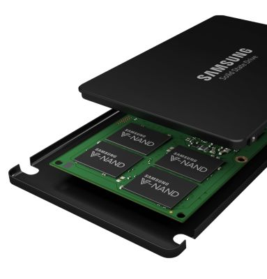
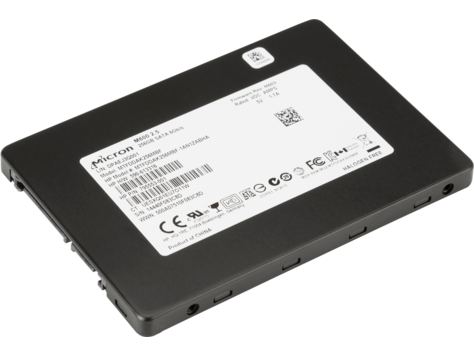

SSD kiezen
Kenmerken
Een SSD, of Solid State Drive, is de snelle opslag, dus hier op komt bijna alle info te staan die je snel moet kunnen laden zoals het besturingssysteem. Een SSD werkt niet met een schijfje maar is gewoon een chip waarop informatica kan worden opgeslagen.
Filters
Bij SSD's werkt de snelheid en opslag hetzelfde als bij HDD's, maar als minimale opslag zou ik bij je SSD 120 GB nemen, en minimaal 500 MBps. Neem wel een Sata SSD, dus niet eentje die werkt met M.2, want dit is veel ingewikkelder. Dus stel dat allemaal maar in bij je filters.
Merken
De beste merken voor SSD's zijn Kingston, Adata, Samsung, Crucial en WD. Deze zijn allemaal even goed en betrouwbaar.
Dit is nog een extra video die alles van een PC samenstellen nog een keer uitlegt (het is wel in het Engels).
Als je je computer hebt samengesteld kan je bij de lijst in je inventaris klikken op 'Prijs berekenen', hier kan je zien wat de goedkoopste prijs is en waar die onderdelen dan worden verkocht, ik raad wel aan even de site waar je het wilt kopen te checken aangezien sommige winkels natuurlijk beter en betrouwbaarder zijn dan andere.
Dit was de laatste stap van Deel 1, je kunt nu het deel beëindigen.